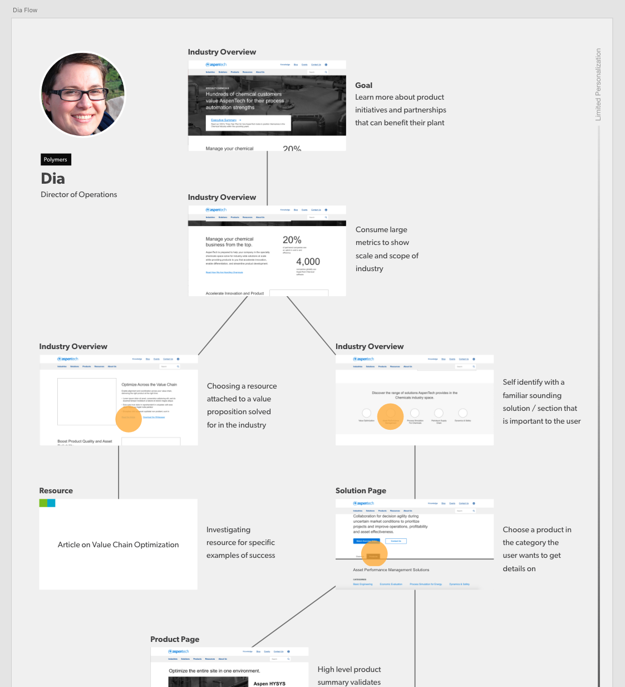
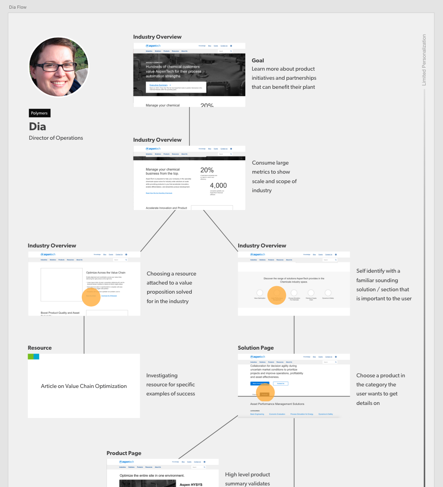
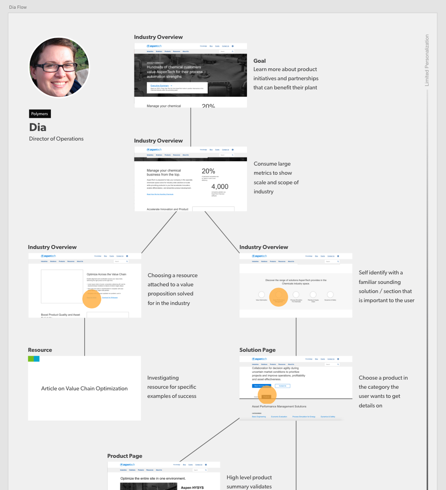

Looking to improve their overall web presence and clear up their information architecture (IA) AspenTech needed personas created to get a better idea of their audience and understand how their users can use their new website to reach their goals.
We started with a template persona we had been concepting in our department to begin to visualize the detailed audiences we wanted to target. Among the many different audiences AspenTech was trying to reach there were three core groups we felt we could extrapolate on.
AspenTech needed to be able to see how a member of each of their primary audiences would find engagement with the website and ultimately satis fy their needs. The two personas below Dia and Dave show the stark differences in pain points a director may feel compared to an engineer that uses software every day. Notice the drastic difference in personal goals and responsiblities.
Wireframes and user flows were a co-joined deliverable, so we decided to spice up the normally simple user flows by adding in wireframe screenshots. For presentations sake the user flows will preface the wireframes below to keep the logical UX process in line here. What the user flows provided for the client was an understanding in the possible routes their visitors could take throughout the website. We indicated reasoning along each potential screen and also indicated where essential pieces of each page may present themselves to each persona.

Presenting wireframes usually is straightforward but to provide extra detail to the client so they have the ability to walk away with our work we provided detailed annotations within the wires.

The new AspenTech experience homepage experience is a fantastic improvement and can be seen here. So far the homepage and primary navigation are the only changes that have taken place. Make sure to check back later to see more updates! Below is a before and after of the homepage.